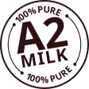
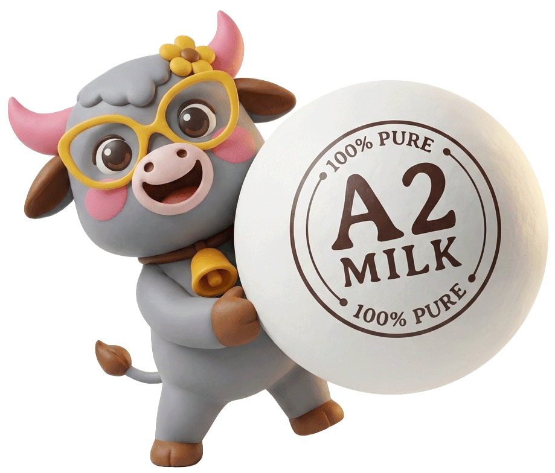

“Bombay Kulfi Ice Creams is not my business. It's my pyaar. My true calling.”
Manish Kankaria, Founder
Born out of a refusal to accept chemical-stuffed modern “ice creams”. We went back to the streets of our childhood – using heritage recipes, slow-churning on real wood fibers, and capturing wild Indian flavors like saffron, gulkand, and real mango.
“To spread happiness and nostalgia by offering authentic Indian Kulfi & Ice Creams made with the absolute finest ingredients and a heavy touch of playful innovation.”

Authenticity First: True to our roots. Just like R.K. Laxman's Common Man, we keep things honest, simple, and unpretentious.
Uncompromising Quality: Made without preservatives, stabilizer gels, or synthetic colors. True quality doesn't need chemical makeup.
Pure A2 Creaminess: Sourced from local Murrah and Surti buffaloes. High fat (6-8%) means the milk caramelizes naturally into deep, golden ribbons.
Walk into any outlet and you'll notice a richness that lingers. That's not an accident. That's a non-negotiable.

Unlike commercial dairy cows, Indian Murrah and Surti buffaloes produce pure A2 milk, completely lacking the A1 beta-casein mutation. At a natural 6% to 8% fat content, it boils down further without curdling, developing a caramelized, butterscotch-like flavor that industrial dairies have forgotten how to achieve.
Many modern brands speed up production by adding artificial thickening agents, khoya substitutes, or high-sugar milk solids. We stand firm: No khoya. No milk powder. No stabilizers. EVER.
Gulabo is the face, heart, and unofficial quality controller of Bombay Kulfi Ice Creams. She doesn't shy away from the spotlight, and she certainly doesn't compromise on Quality.
Find Gulabo Near YouA royalty-free, high-yielding business model that pays for itself in under 15 months. Completely chef-less store management with 100% centralized Mumbai manufacturing supply chain.
Own a FranchiseZonal Regional Filters
Matching Locations (0)